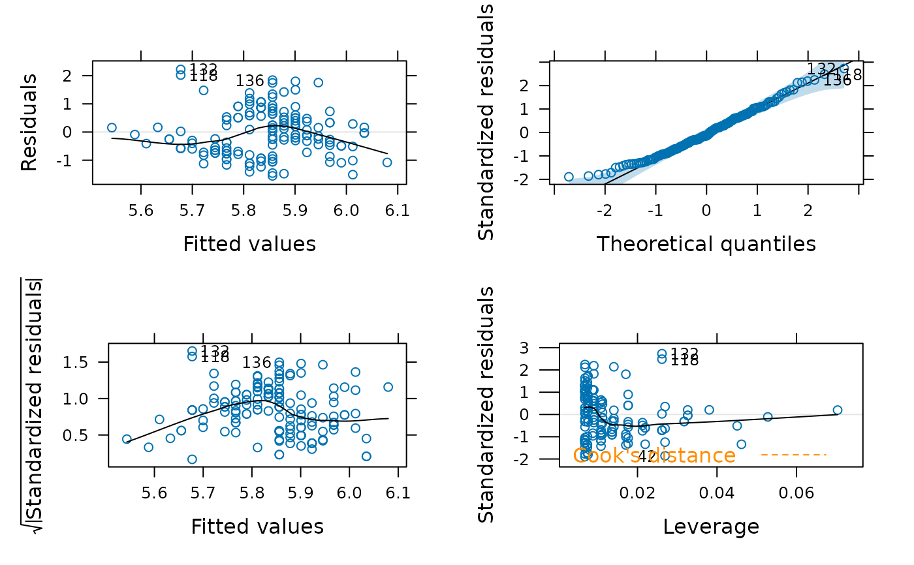
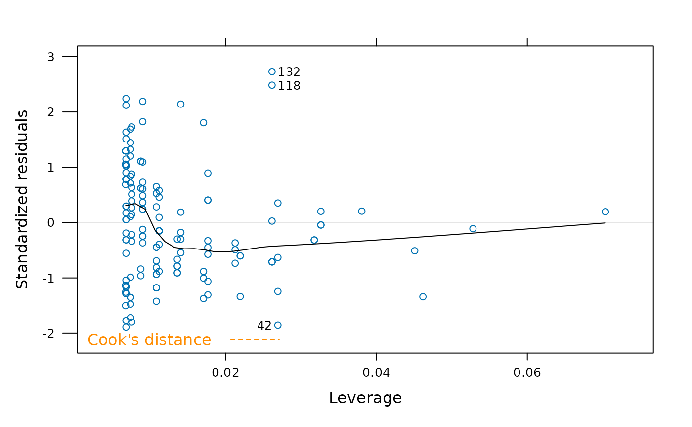

Lattice plot diagnostics for lm objects, mostly mimicking the behavior
of stats::plot.lm() but based on lattice::xyplot() instead.
Arguments
- x
- data
Only provided for method consistency and is ignored.
- which
if a subset of the plots is required, specify a subset of the numbers
1:6- main
if
TRUEplots default titles. Can also be alistor character vector of length 6.- id.n
number of points to be labelled in each plot, starting with the most extreme.
- labels.id
vector of labels, from which the labels for extreme points will be chosen.
NULLuses observation numbers.- cex.id
magnification of point labels.
- cook.levels
levels of Cook's distance at which to draw contours.
- label.pos
positioning of labels, for the left half and right half of the graph respectively, for plots 1-3, 5, 6.
- layout
a numeric vector with
[columns, rows]to use in the call togridExtra::grid.arrange(), or a layout matrix which will then be passed as thelayout_matrixingrid.arrange().- ...
arguments to be passed to
lattice::xyplot().
Examples
fit <- lm(Sepal.Length ~ Sepal.Width, data = iris)
xyplot(fit)

xyplot(fit, which = 5)
